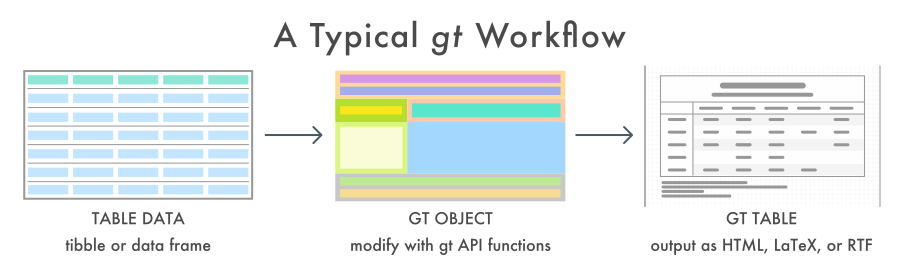
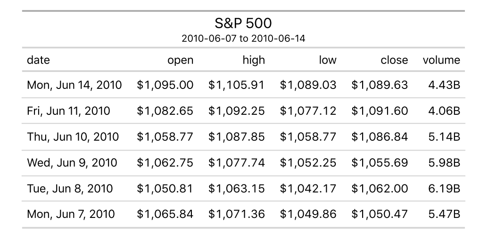
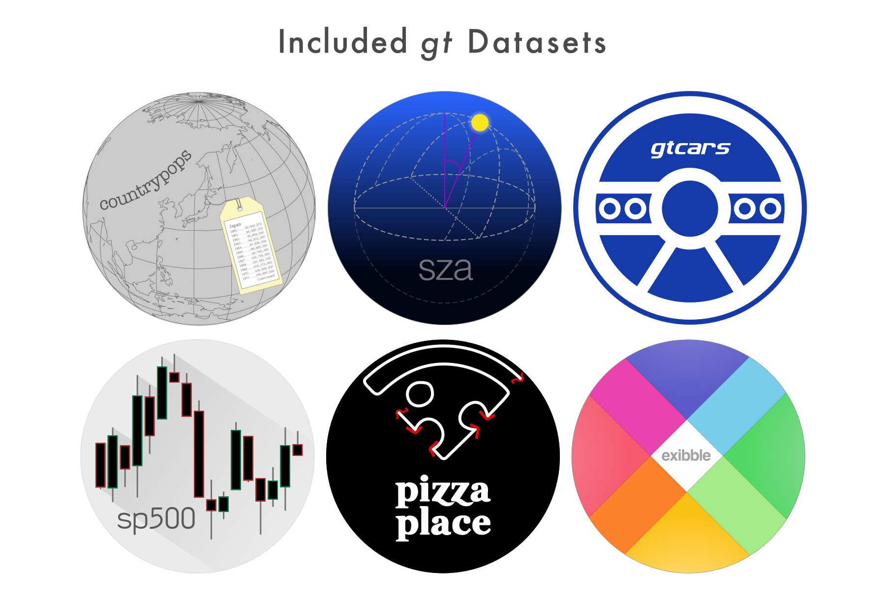
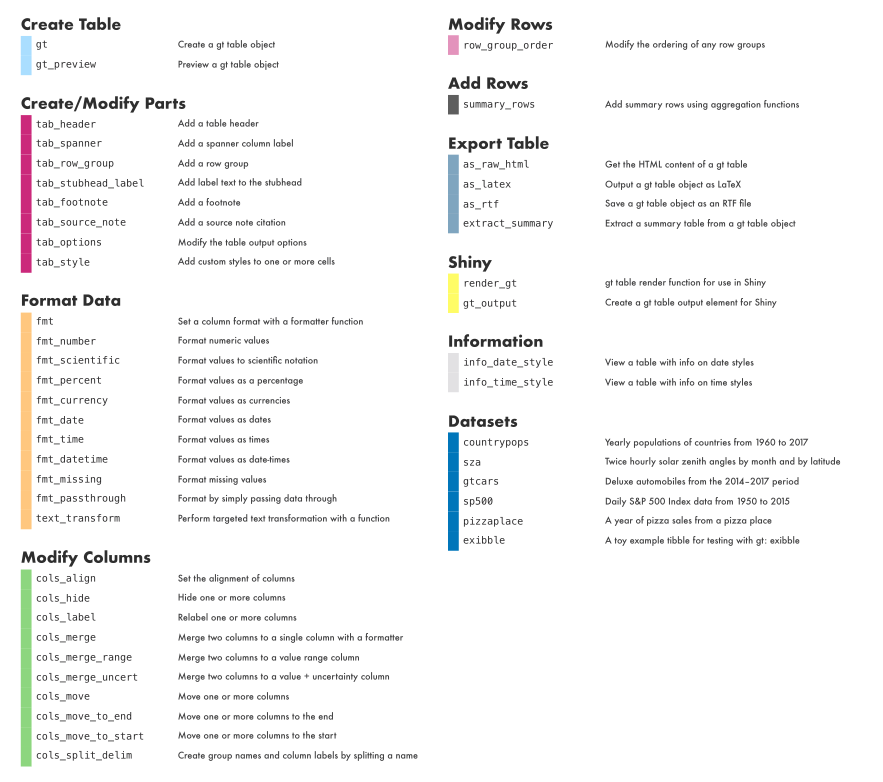
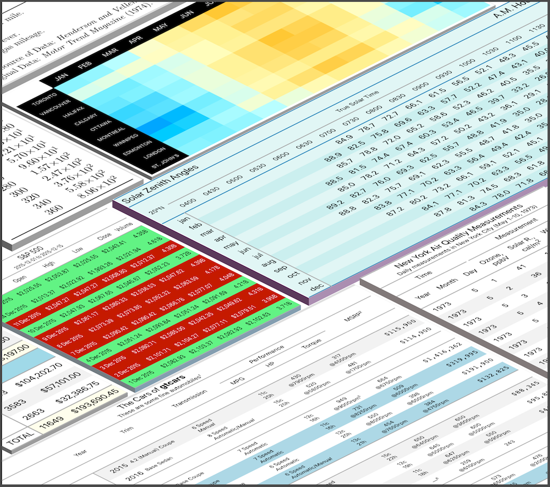

With the gt package, anyone can make wonderful-looking tables using the R programming language. The gt philosophy: we can construct a wide variety of useful tables with a cohesive set of table parts. These include the table header, the stub, the stub head, the column labels, the table body, and the table footer.

It all begins with preprocessed table data (be it a tibble or a data frame). You decide how to compose your gt table with the elements you need for the task at hand. Output can either be in the form of HTML, LaTeX, or RTF. All work beautifully inside R Markdown documents.

The gt API is designed to be both straightforward yet powerful. The emphasis is on simple functions for the everyday display table needs. Here is a brief example of how to use gt to create an HTML gt Table from the included sp500 dataset:
library(gt)
library(tidyverse)
library(glue)
# Define the start and end dates for the data range
start_date <- "2010-06-07"
end_date <- "2010-06-14"
# Create a gt table based on preprocessed
# `sp500` table data
sp500 %>%
dplyr::filter(date >= start_date & date <= end_date) %>%
dplyr::select(-adj_close) %>%
dplyr::mutate(date = as.character(date)) %>%
gt() %>%
tab_header(
title = "S&P 500",
subtitle = glue::glue("{start_date} to {end_date}")
) %>%
fmt_date(
columns = vars(date),
date_style = 3
) %>%
fmt_currency(
columns = vars(open, high, low, close),
currency = "USD"
) %>%
fmt_number(
columns = vars(volume),
scale_by = 1 / 1E9,
pattern = "{x}B"
)
There are six datasets included in gt: countrypops, sza, gtcars, sp500, pizzaplace, and exibble. All of them are useful for experimenting with the API.

Beyond this simple example, there are many functions available in gt that make it possible to create highly customized tables.

Want to try this out? First and foremost, the gt package is used in an R environment, so, if you don’t have an R installation, it can be obtained from the Comprehensive R Archive Network (CRAN). For the best experience in working with R, use the RStudio Desktop IDE.
You can install the development version of gt from GitHub. Use the following in the R console to install gt.
If you encounter a bug, have usage questions, or want to share ideas to make this package better, feel free to file an issue.
